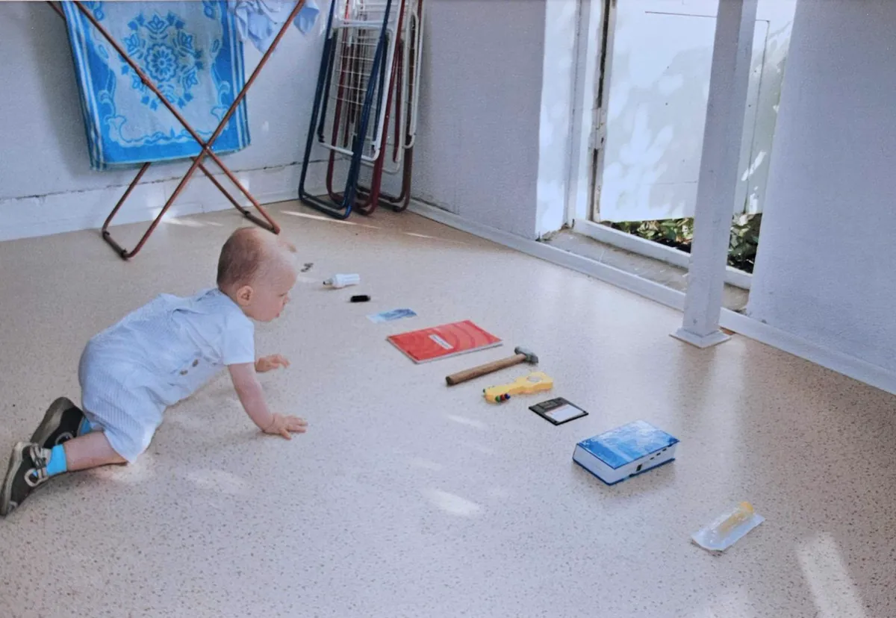
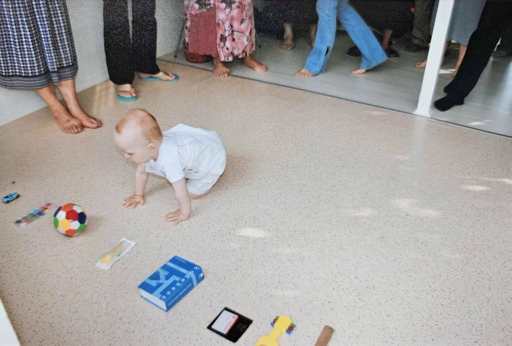
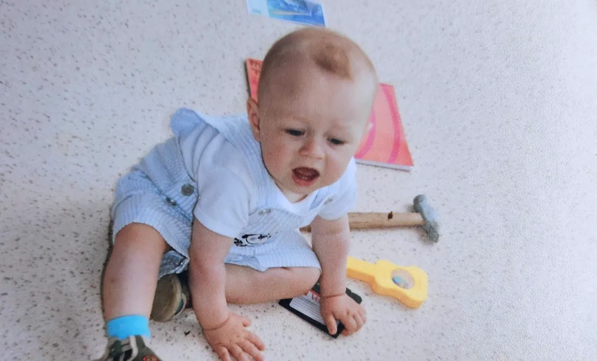

for my 1st birthday my parents ran the old game where they lay out a bunch of objects and whatever the baby crawls to is supposed to be its future profession. i picked the floppy disc.

the lineup

deliberating

verbatim floppy in hand
other than that, i was just curious how essentially anything is possible with a computer. planning, researching any topic, building things, fixing things, automating stuff. essentially limitless opportunities.
knowledge compounded and eventually i became the "go-to tech guy" in the family. if it has a screen or a cable, i get the call (i'm batman).